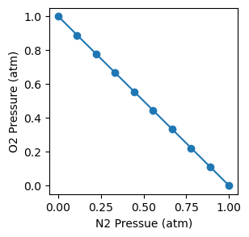
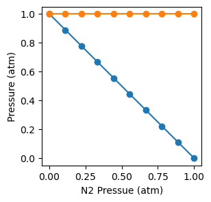
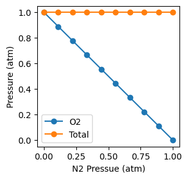
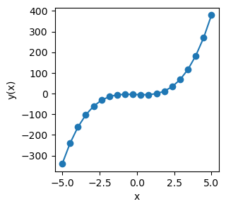
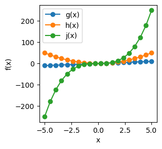

Hello Python: Intro to Python#
Section Goals:
Use Python to:
Declare and manipulate variables, strings, integers, and floats
Perform arithmetic calculations
Generate plots
Functions, text, and numbers#
Writing a program to output text#
The first program that many people learn to write is a “Hello, world!” program, which performs the function of outputting the phrase “Hello, world!”
To do so, we need the print() function. print() outputs whatever its object is. Similar to a mathematical function (\(f(x)\)), the function object is placed in the parentheses (print(x)).
For a “Hello, world!” program, the object is text data stored as a string data type. In Python, strings are indicated using either single (') or double (") quotations marks.
Let’s see it in action:
print('the world is waiting to be greeted')
the world is waiting to be greeted
Side Note
# denotes a comment, for annotating code. Python ignores everything on a line after #. If the line just read write your code here, an error would be raised. You can try it and see!
Exercise 1 (Greet the world)
In the code cell below, use the print() function to output the string: Hello, world!
Recall: To make the cells editable and executable, click the rocket symbol at the top of this page, click “live code”, and wait for the progress window to read: “Launching from mybinder.org: ready”
#write your code here!
Solution to Exercise 1 (Greet the world)
print("Hello, world!")
'Hello, world!'
Numbers: Floats, integers, and arithmetic#
Numerical data is also very useful.[1] Numbers can be stored as an integer or float data type. Python can also perform several arithmetic operations directly, much like a calculator. Common operators are summarized in Table 1.
Side Note
Python can also directly handle integer division and modulus operations.
Operator |
Operation |
Example |
Equivalent to |
|---|---|---|---|
+ |
Addition |
|
\(5+3\) |
- |
Subtraction |
|
\(5-3\) |
* |
Multiplication |
|
\(5\cdot3\) |
/ |
Division |
|
\(\frac{5}{3}\) |
** |
Exponentiation |
|
\(5^3\) |
Python follows standard order of operations: parentheses first, then exponents, then multiplication & division, then addition & subtraction.
Exercise 2 (Hello Math)
What do you think the Python output will be for each operation below? Make a prediction, then use the code cell below to test your prediction by performing the calculations and printing the outputs.
5 + 10
5.0 + 10.0
Make a prediction: What do you think would happen if you added a combination of integers and floats?
Test your prediction by printing one or more calculations in the code cell below.
In the code cells below, print:
5 divided by 2
10 raised to the 2nd power
Predict the output of each of the following lines, and then test your predictions by printing the outputs in the code cell below.
print(2 * 3 - 1)print(2 ** 3 - 1)print(2 * (3 - 1))
Side Note
Space between values can make reading code easier. Python ignores spaces unless they are in a string.
Multiple objects can be included in one print command, separated by commas. Each will print sequentially, on the same line.
#your solution for (a) here
#your solution for (b) here
#your solution for (c) here
#your solution for (d) here
Solution to Exercise 2 (Hello Math)
print("1. ", 5 + 10)
print("2. ", 5.0 + 10.0)
'1. 15\n2. 15.0'
Python outputs an integer (15) when two integers are added (5 + 10); it outputs a float (15.0) when two floats are added (5.0 + 10.0).
I predict it will default to a float. Let’s see:
print("test: ", 5 + 10.0)
'test: 15.0'
Viola, it’s a float! If it defaulted to an integer, information could be lost.
print("1. ", 5/2)
print("2. ", 10**2)
'1. 2.5\n2. 100'
print("1. ", 2 * 3 - 1)
print("2. ", 2 ** 3 - 1)
print("3. ", 2 * (3 - 1))
'1. 5\n2. 7\n3. 4'
Calculation 1 completes multiplication then subtraction:
Calculation 2 completes exponentiation then subtraction:
Calculation 3 completes the parentheses then multiplication:
Variables#
In programming, a variable stores an object (string, integer, float, etc). Once a variable is assigned a value, it retains that value throughout a session until it is changed.
Using variables instead of hardcoding in a specific value makes it easier to write, read, and update code. By assigning a value to a variable and then referring to the variable throughout, the value can be updated everywhere i the code at once by simply updating the definition.
For example:
Side Note
Variables are case sensitive! They also cannot contain spaces or operators (+, -, etc).
#defining variables manually:
P = 1.0 #atm
R = 0.08206 #(L*atm)/(mol*K)
T = 100 #K
n = 1.0 #mol
#defining a variable based on other variables:
V = n*R*T/P
#display the calculated volume
print("Volume: ", V, " L")
Volume: 8.206 L
Exercise 3 (Hello Variables)
Following the structure in the example above, calculate and print:
Pressure (\(P_\text{N2}\)) of \(n_\text{N2}=2.0\) mol
Pressure (\(P_\text{O2}\)) of \(n_\text{O2}=0.5\) mol
at the following conditions:
\(V = 15 \text{ L}\)
\(T = 300 \text{ K}\)
Hint: be sure to use different variables for different parameters, don’t just overwrite them (e.g., n_N2, n_O2 instead of just n).
Add on to your code to calculate the total pressure of the system.
Hint: Recall the law of partial pressures: \(P_\text{total}=P_1+P_2+P_3+...\)
Uh oh, things are heating up! Update your code to perform the calculations with \(T=500 \text{ K}\)
Hint: If you set up and used variables nicely, this should only require one single change!
#your answer here!
Solution to Exercise 3 (Hello Variables)
#define values:
V = 15 #L
R = 0.08206 #(L*atm)/(mol*K)
T = 300 #K
n_N2 = 2.0 #mol
n_O2 = 0.5 #mol
#calculate P:
P_N2 = n_N2*R*T/V
P_O2 = n_O2*R*T/V
print("P_N2: ", P_N2, " atm")
print("P_O2: ", P_O2, " atm")
'P_N2: 3.2824 atm\nP_O2: 0.8206 atm'
All we need to do is add the calculation \(P_\text{total}=P_\text{O2}+P_\text{N2}\):
#define values:
V = 15 #L
R = 0.08206 #(L*atm)/(mol*K)
T = 300 #K
n_N2 = 2.0 #mol
n_O2 = 0.5 #mol
#calculate pressures:
P_N2 = n_N2*R*T/V
P_O2 = n_O2*R*T/V
#calculate total pressure:
P_tot=P_N2+P_O2
print("P(N2): ", P_N2, " atm")
print("P(O2): ", P_O2, " atm")
print("P(total): ", P_tot, " atm")
'P(N2): 3.2824 atm\nP(O2): 0.8206 atm\nP(total): 4.103 atm'
Because we defined our system parameters as variables and referred to those variables in calculations, we can update the temperature for all calculations simply by updating the definition of T:
#define values:
V = 15 #L
R = 0.08206 #(L*atm)/(mol*K)
T = 500 #K
n_N2 = 2.0 #mol
n_O2 = 0.5 #mol
#calculate pressures:
P_N2 = n_N2*R*T/V
P_O2 = n_O2*R*T/V
#calculate total pressure:
P_tot=P_N2+P_O2
print("P(N2): ", P_N2, " atm")
print("P(O2): ", P_O2, " atm")
print("P(total): ", P_tot, " atm")
'P(N2): 5.4706666666666655 atm\nP(O2): 1.3676666666666664 atm\nP(total): 6.838333333333332 atm'
Arrays and lists#
So far we have used scalar variables. As you might imagine, there are many situations where it is useful for a variable to represent a collection of values. This can be done using an array or a list. Similar to strings, floats, and integers, the list data-type is pre-installed in Python directly.
Lists can de defined using square brackets ([ ]). For example:
this_is_a_string_list = ["list entry 1", "list entry 2", "list entry 3", "etc."]
this_is_a_float_list = [1.11, 1.12, 1.14, 1.15]
this_is_a_mixed_list = [1.11, 1.12, 1.14, 1.15, "etc."]
print("strings: ", this_is_a_string_list)
print("floats: ", this_is_a_float_list)
print("mixed: ", this_is_a_mixed_list)
strings: ['list entry 1', 'list entry 2', 'list entry 3', 'etc.']
floats: [1.11, 1.12, 1.14, 1.15]
mixed: [1.11, 1.12, 1.14, 1.15, 'etc.']
In contrast, arrays are not pre-installed. To use these, we need to load a coding library. By loading a coding library, we load in definitions of functions and data types that we can use without having to define them ourselves.
The NumPy[2] library is very useful for scientific calculations. Its array class enables mathematical calculations to be applied to the entire collection, can be used in plotting, etc. NumPy also contains a number of functions that can be used to generate an array; several of the more common ones are summarized in Table 2
Side Note
Note that NumPy’s arange() function includes the start value, but stops one shy of the stop value. The linspace() function includes both.
NumPy Function |
Description |
Example |
Output |
|---|---|---|---|
|
Converts a Python list into a NumPy array |
|
|
|
Given \(x\), \(y\), \(z\), returns an array of \(z\)-spaced values from \(x\) to \(y\) |
|
|
|
Given \(x\), \(y\), \(z\), returns an array of \(z\) linearly-spaced values from \(x\) to \(y\) |
|
|
Consider the following:
import numpy as np
x = np.linspace(0, 20, 10)
print(x)
[ 0. 2.22222222 4.44444444 6.66666667 8.88888889 11.11111111
13.33333333 15.55555556 17.77777778 20. ]
The first line loads the numpy library, and gives it the name np. When we want to call a function from a library, we need to tell Python which library it can find the function’s definition in. As shown in the second line, we do that by prefixing the function name with np..
Exercise 4 (Hello Array)
In the code cell below, use NumPy’s linspace() function to create a variable called x_20 which ranges from -4 to 4 and has 20 points. Print x_20 so you can look at it.
You could manually count the points to confirm that x_20 contains 20 objects. Or, you can take advantage of another NumPy function: shape. shape() returns a tuple: (m,n), where m is the number of rows in the array and n is the number of columns. The syntax for this function is np.shape(your_array).
Use np.shape() to verify that x_20 is indeed 1 dimensional, with 20 entries.
Create a new variable, y_20 defined as y_20 = x_20+3. Use the np.shape() function to confirm it has the same dimensions as x_20.
#your answers here
Solution to Exercise 4 (Hello Array)
x_20 = np.linspace(-4,4,20)
print(x_20)
'[-4. -3.57894737 -3.15789474 -2.73684211 -2.31578947 -1.89473684\n -1.47368421 -1.05263158 -0.63157895 -0.21052632 0.21052632 0.63157895\n 1.05263158 1.47368421 1.89473684 2.31578947 2.73684211 3.15789474\n 3.57894737 4. ]'
This can be done by printing the shape function directly:
print(np.shape(x_20))
'(20,)'
or by assigning shape to a variable and printing that variable:
shipshape = np.shape(x_20)
print(shipshape)
'(20,)'
y_20 = x_20 + 3
print(np.shape(y_20))
'(20,)'
Plotting#
There are several libraries that facilitate visualizing data; a common one is matplotlib, which has a submodule called pyplot. Let’s see an example:
Side Note
Plots are very customizeable. For more info about plotting, see Sci Comp for Chemists §3.1
1#import the libraries we need
2import numpy as np
3import matplotlib.pyplot as plt
4
5#get some stuff to plot
6
7#let the total pressure be constant
8P_tot = 1 #atm
9
10#let pressure N2 vary from 0-1 atm
11P_N2 = 1-np.linspace(0, 1, 10) #atm
12
13#let pressure O2 vary relative to P_N2, to keep total P constant
14P_O2 = P_tot - P_N2 #atm
15
16#plot the stuff
17plt.figure(figsize=(3,3))
18plt.plot(P_N2,P_O2,'o-')
19plt.xlabel('N2 Pressue (atm)')
20plt.ylabel('O2 Pressure (atm)')
21plt.show()

Let’s break this down:
Line 17 calls the matplotlib function
figure(), which creates a figure window for the plot. We also defined the figure size to be 3 inches x 3 inches; defining the figure size is optional.Line 18 calls the matplotlib function
plot(), inputs three objects: the first (P_N2) is x-axis values, the second (P_O2) is y-axis values. The string'o-'is optional–it tellsplot()to display data point markers and a line connecting each data point. This generates the plot in the figure window.Line 19 calls the matplotlib function
xlabel(), and inputs the x-axis label as a stringLine 20 calls the matplotlib function
ylabel(), and inputs the x-axis label as a stringLine 21 calls the matplotlib function
show(), which displays the figure window and its contents
If we want to plot multiple curves in the same window, we can do that by using plt.plot() multiple times:
1import numpy as np
2import matplotlib.pyplot as plt
3
4P_tot = 1 #atm
5P_N2 = 1-np.linspace(0, 1, 10) #atm
6P_O2 = P_tot - P_N2 #atm
7P_total=P_N2+P_O2 #atm -- to check it is indeed constant
8
9plt.figure(figsize=(3,3))
10plt.plot(P_N2,P_O2,'o-') #this is plots one curve
11plt.plot(P_N2,P_total,'o-') #this plots another!
12plt.xlabel('N2 Pressue (atm)')
13plt.ylabel('Pressure (atm)')
14plt.show()

However, if we are doing that we should use a legend to label our curves! Matplotlib also has a function for that: legend(). There’s a couple ways to use plt.legend() to generate a label. One way is to create a list of the curve labels (list of strings), which are inputted to plt.legend() in the order the curves are plotted. For example:
1import numpy as np
2import matplotlib.pyplot as plt
3
4P_tot = 1 #atm
5P_N2 = 1-np.linspace(0, 1, 10) #atm
6P_O2 = P_tot - P_N2 #atm
7P_total=P_N2+P_O2 #atm -- to check it is indeed constant
8
9plt.figure(figsize=(3,3))
10plt.plot(P_N2,P_O2,'o-')
11plt.plot(P_N2,P_total,'o-')
12plt.xlabel('N2 Pressue (atm)')
13plt.ylabel('Pressure (atm)')
14
15curve_names=['O2', 'Total']
16plt.legend(curve_names)
17
18plt.show()

Alternatively, the curve label can be defined within plt.plot(). When plt.legend() is called, it automatically refers to the the curve legend names as defined in plt.plot(). An advantage of this is you don’t have to make sure you’re manually keeping the order of the legend aligned with the order curves are plotted. For example:
1import numpy as np
2import matplotlib.pyplot as plt
3
4P_tot = 1 #atm
5P_N2 = 1-np.linspace(0, 1, 10) #atm
6P_O2 = P_tot - P_N2 #atm
7P_total=P_N2+P_O2 #atm -- to check it is indeed constant
8
9plt.figure(figsize=(3,3))
10plt.plot(P_N2,P_O2,'o-', label='O2')
11plt.plot(P_N2,P_total,'o-', label='Total')
12plt.xlabel('N2 Pressue (atm)')
13plt.ylabel('Pressure (atm)')
14
15plt.legend()
16
17plt.show()
Exercise 5 (Just Plotting, no Scheming)
Generate a figure that plots \(y(x) = ax^3 + bx^2 + cx + d\) over the range \(x = -5\) to \(x = 5\), for the following values:
\(a = 3\)
\(b = 1\)
\(c = -3\)
\(d = -5\)
Be sure to label your axes, and indicate your data points with markers!
Generate a figure and plot the following over the range \(x = -5\) to \(x = 5\):
\(g(x) = 2x\)
\(h(x) = 2x^2\)
\(j(x) = 2x^3\)
Be sure to create a legend to label your curves!
#your answer to (a) here!
#your answer to (b) here!
#cell metadata tagged: remove-cell
import numpy as np
import matplotlib.pyplot as plt
# (a)
a = 3
b = 1
c = -3
d = -5
x = np.linspace(-5, 5, 20)
y = a*x**3 + b*x**2 + c*x + d
fig_a = plt.figure(figsize=(3,3))
plt.plot(x, y, 'o-')
plt.xlabel('x')
plt.ylabel('y(x)')
glue("hello-plots-soln-a", fig_a, display=False)
plt.close(fig_a)
# (b)
g = 2*x
h = 2*x**2
j = 2*x**3
fig_b = plt.figure(figsize=(3,3))
plt.plot(x, g, 'o-', label="g(x)")
plt.plot(x, h, 'o-', label="h(x)")
plt.plot(x, j, 'o-', label="j(x)")
plt.xlabel('x')
plt.ylabel('f(x)')
plt.legend()
glue("hello-plots-soln-b", fig_b, display=False)
plt.close(fig_b)
Solution to Exercise 5 (Just Plotting, no Scheming)
#load libraries
import numpy as np
import matplotlib.pyplot as plt
#define values
a = 3
b = 1
c = -3
d = -5
#create array with x-values
x=np.linspace(-5, 5, 20)
#calculate y-values
y= a*x**3 + b*x**2 + c*x + d
#plot it
plt.figure(figsize=(3,3))
plt.plot(x,y,'o-')
plt.xlabel('x')
plt.ylabel('y(x)')
plt.show()

import numpy as np
import matplotlib.pyplot as plt
#create array with x-values
x=np.linspace(-5, 5, 20)
#calculate y-values for each function
g = 2*x
h = 2*x**2
j = 2*x**3
plt.figure(figsize=(3,3))
plt.plot(x,g,'o-', label="g(x)")
plt.plot(x,h,'o-', label="h(x)")
plt.plot(x,j,'o-', label="j(x)")
plt.xlabel('x')
plt.ylabel('f(x)')
plt.legend()
plt.show()

Glossary#
- string#
A data type that stores characters (letters, punctuation, numbers). Numbers stored as a string will be treated as text (i.e., no math operations will work with those numbers).
- function#
Functions can be called by name to perform a given task or series of tasks. A programming function can take an object. All functions must be defined, but several functions are predefined in Python directly; definitions for many others can be called collectively through calling a library package. The user can also define new or tailored functions.
- integer#
A whole number (no decimal or remainder).
- float#
A decimal number. Short for “floating point number”, floats store both the number and position of the decimal.
- integer division#
Returns the whole number result, dropping any remainder (decimal). For example:
5 \\ 3would return1.- modulus#
modulus returns the remainder (decimal) only. For example:
5 % 3would return2.- variable#
a storage location that “holds” a value. Essentially, a name that points to the object(s) or item(s) assigned to it.
- scalar variable#
variables with just one assigned value
- array#
a collection of objects of the same data type
- list#
a collection of objects which may or may not be of the same data type
- tuple#
a set of paired values, e.g.: (m,n)
- coding library#
a package of pre-defined functions, objects, etc., that can be loaded into a program and used without having to manually include all definitions in the program itself.